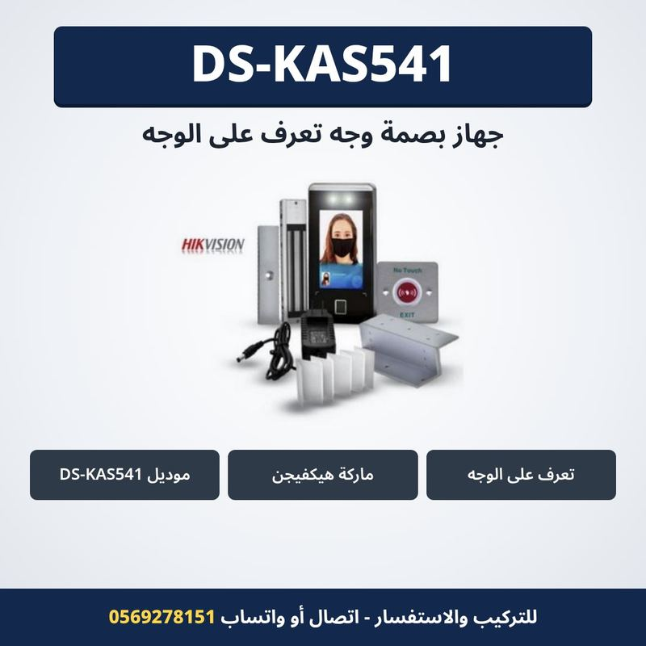

كل المنتجات ← شاشات وإكسسوارات
الموديل: DS-KAS541

| الماركة | هيكفيجن |
|---|---|
| الموديل | DS-KAS541 |
| نوع المنتج | جهاز بصمة وجه تعرف على الوجه |
| Face Recognition Terminal/System parameters | |
| الموديل | DS-K1T341CMF |
| نظام التشغيل | Linux |
| Face Recognition Terminal/Display parameters | |
| حجم الشاشة | 4.3-inch |
| طريقة التشغيل | Capacitive touch screen |
| النوع | LCD |
| الدقة | 480 × 800 |
| Face Recognition Terminal/Video parameters | |
| العدسة | × 2 |
| الدقة | 2 MP |
| Face Recognition Terminal/Network | |
| Wired network | 10 M/100 M/1000 M self-adaptive |
| Face Recognition Terminal/Interface | |
| Network interface | 1 |
| Lock control | 1 |
| Exit button | 1 |
| Door contact input | 1 |
| TAMPER | 1 |
| RS-485 | 1 |
| Wiegand | 1 |
| USB | 1 |
| Face Recognition Terminal/Capacity | |
| Face capacity | 1,500 |
| Fingerprint capacity | 1,500 |
| Card capacity | 1,500 |
| Event capacity | 150,000 |
| Face Recognition Terminal/Authentication | |
| Face recognition distance | 0.3 to 1.5 m |
| Face recognition accuracy rate | ＞99% |
| Face recognition duration | ＜ 0.2 s |
| Fingerprint recognition duration | ＜ 1 s |
| Card type | M1 card |
| Card reading frequency | 13.56MHz |
| Card reading distance | 0 to 3 cm |
| Card reading duration | ＜ 1 s |
| Face Recognition Terminal/Function | |
| QR code recognition | Support |
| Face anti-spoofing | Support |
| Audio prompt | Support |
| Time synchronization | Support |
| Face Recognition Terminal/General | |
| Button | Touch screen |
| Power supply | 12 VDC, 2 A. |
| Working temperature | -30 °C to 60 °C (-22 °F to 140 °F) |
| Working humidity | 0 to 90% (No condensing) |
| Protective level | IP65 |
| الأبعاد | 172.5 mm × 83.2 mm × 22.7 mm (6.79" × 3.27" × 0.89") |
| Installation | Surface mounting |
| Magnetic Lock/General | |
| Unlock method | Current interruption |
| الموديل | DS-K4H258S |
| Maximum holding force | 280 kg (617.4 Lbs) linear thrust |
| Power supply | 12 VDC, 340 mA |
| Indicator | Green (work status) |
| Surface temperature | ≤ ambient temperature 20 °C (68 °F) |
| Working temperature | -10 °C to 55 °C (14 °F to 131 °F) |
| Working humidity | 0 to 95% (relative humidity) |
| الأبعاد | Lock body: 238 mm × 45 mm × 25 mm (9.4" × 1.8" × 1.0") Armature plate: 182 mm × 38 mm × 12.5 mm (7.2" × 1.5" × 0.5") |
| Suitable door | Wooden door, glass door, metal door, fireproof door |
| Shell performance | Hard anodizing electroplating operated |
| Lock body | Eco-friendly Nickel electroplating operated |
| Armature plate | Eco-friendly Nickel electroplating operated |
| Card/General | |
| الموديل | FM11RF08-M1 |
| ذاكرة الوصول العشوائي | 1 K byte |
| Card reading frequency | 13.56 MHz |
| Card property | Thin card |
| Function | Read/write |
| Card reading distance | ≤10 cm |
| Working temperature | -20 °C to 75 °C (-4 °F to 167 °F) |
| الأبعاد | 85.5 mm × 54 mm × 0.8 mm (3.37"× 2.13" × 0.03") |
| الخامة | PVC |
| اللون | White |
| Bracket of Magnetic Lock/General | |
| الأبعاد | L-bracket: 238 mm ×30 mm × 47 mm (9.4" × 1.2" × 1.9") Z-bracket: 185 mm ×44mm × 100 mm (7.3" ×1.7" × 3.9") |
| الموديل | DS-K4H258-LZ |
| Suitable Door | Wooden, metal |
| Shell performance | Hard anodizing electroplated |
| Exit Button/General | |
| Power supply | 12 VDC, 40 mA (standby)/70 mA (working) |
| الموديل | DS-K7P03 |
| Current rating | 1 A@30 VDC |
| Working temperature | -20 °C to 50 °C (-4 °F to 122 °F) |
| Working humidity | 0 to 95% (relative humidity) |
| الأبعاد | 86 mm × 86 mm × 25.7 mm (3.39" × 3.39" × 1.01") |
| الخامة | Stainless steel |
| Output contact | NO/NC/COM contact |
| Aging test | Already passed 1 million times aging test |
| Suitable door | All kinds of narrow doorframes |